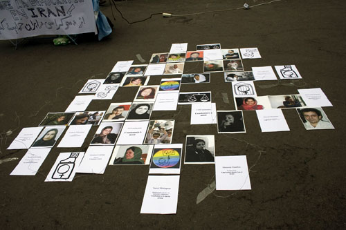
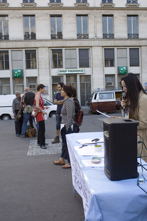

|
|
اعتراض به صدور احكام ناعادلانه در پاریس و بروکسل
چهار شنبه12 تیر 1387

تغيير براي برابري: پاريس - 27 ژوئن 2008 در میدان بورس باریس جمعی از زنان و مردان در اعتراض به احکام نا عادلانه ای که برای عده ای از فعالان صادر شده است گردآمدند و اعتراض خود را به احکام صادر شده برای فعالان جنبش زنان همچون امیر یعقوبعلی، هانا عبدی، روناک صفا زاده، فعالین دانشجویی مثل احمد قصابان، احسان منصوری،مجید توکلی و سندیکالیست ها مثل منصور اسالو و فعالین حقوق اقلیت های قومی و جنسی اعلام كردند.
میدان بورس پاریس محل استقرار آزانس خبری فرانسه است و این تجمع حرکتی نمادین برای رساندن صدای مردم ایران به جامعه جهانی بود.صدایی که اغلب در بین انبوهی از خبرهای جنگ و اخبار مربوط به انرژی هسته ای شنیده نمی شود.
روی زمین تصاویری از فعالین جنبش مدنی ایران همراه با اسامی و احکام صادر شده برایشان چسبانده شد بود که تصویری از بی عدالتی های اخیر در سیستم قضایی را به نمایش گذاشته بود..

رهگذران و شهروندان فرانسوی با کنجکاوی در برابر این تصاویر می ایستادند و سوالاتی مطرح می کردند، همچنین در این بین فرم های کمپین یک میلیون امضا نیز برای مطالعه وجودداشت و مردم بعداز مطالعه آن ، آن را امضا می کردند.
این تجمع در ساعت 9 شب در پاریس پایان گرفت درحالیکه در همین روز تجمع دیگری نیز در حمایت از آن به طور همزمان در بروکسل نیز جریان داشت.